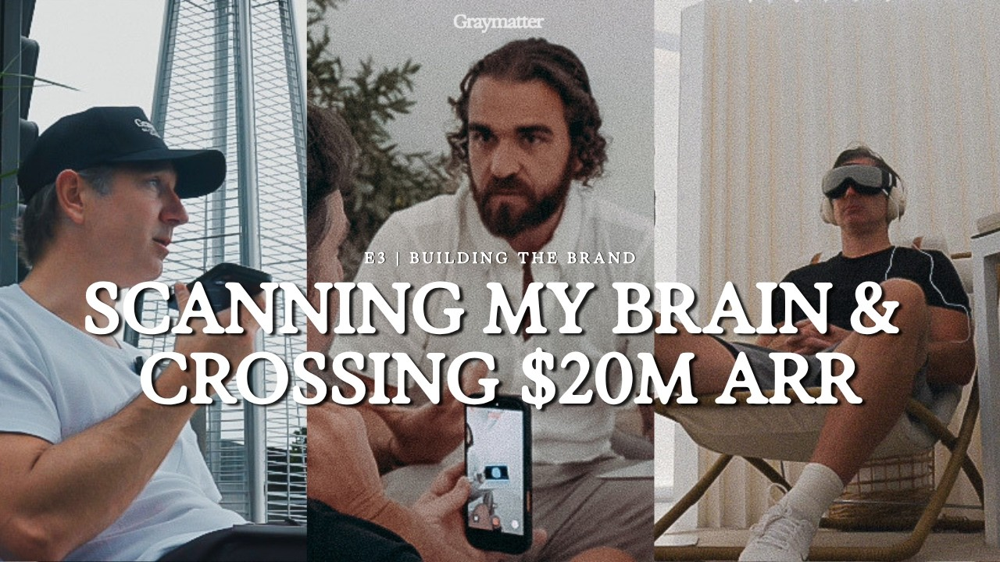

lp-lab
Competitor landing pages, rebuilt on the Graymatter system.
Each entry is a competitor page torn down to its structure and conversion mechanics, then rebuilt with Graymatter tokens, assets, and compliant copy. Anything in a dashed pink chip on a page is a placeholder that still needs an owner. Nothing here is production.
-

Athlete partner page
Nine-block partner page: founders film, split hero on the ICP 1 mechanism, verbatim pull quote, Olive blend section with certification badges, format grid from Shopify data, Tarmac mechanism split with the homepage timeline, testimonial rail, footer with the boxed disclaimer.